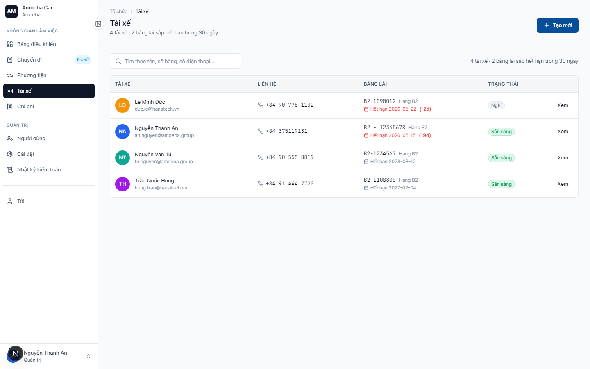
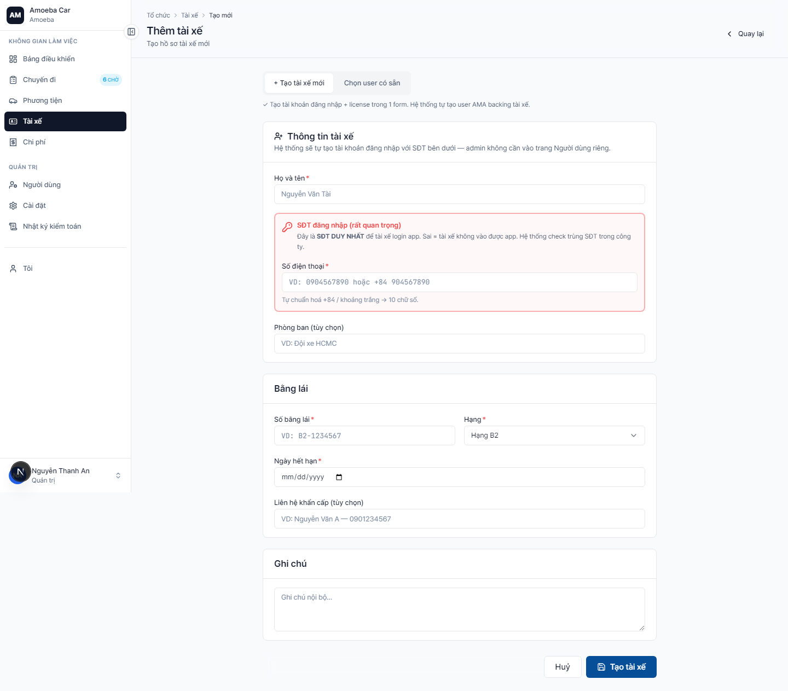

Quản lý tài xế (Drivers)
- URL
/drivers(list) ·/drivers/new(thêm) ·/drivers/[id]/edit(sửa)- Bằng lái
- Hệ thống tự cảnh báo nếu bằng sắp hết hạn (≤ 30 ngày = đỏ, ≤ 90 ngày = vàng)
Danh sách tài xế

Mỗi dòng tài xế hiển thị:
- Avatar + Tên + Email
- Số điện thoại (bấm vào để gọi trên di động)
- Số bằng lái + hạng (B2, C, D…)
- Trạng thái (Sẵn sàng / Đang chạy / Nghỉ / Không sẵn sàng)
- Hạn bằng lái — màu đỏ nếu ≤ 30 ngày
Thêm tài xế mới

1
Trước khi thêm tài xế, cần có user tương ứng. Nếu chưa có, hãy mời user mới với vai trò MEMBER (DRIVER).
2
Vào /drivers/new → chọn User từ dropdown (chỉ hiện user chưa có hồ sơ tài xế).
3
Điền thông tin bằng lái:
- Số bằng lái (vd
B2-1234567) - Hạng bằng — A2 / B1 / B2 / C / D / E / F
- Ngày hết hạn
- Số điện thoại — định dạng
+84 90 555 8819 - Liên hệ khẩn cấp (tùy chọn)
4
Bấm "Lưu". Tài xế giờ có thể được gán vào chuyến.
Cập nhật khi bằng lái sắp hết hạn
Khi tài xế gia hạn bằng, vào /drivers/[id]/edit → cập nhật ngày hết hạn mới. Hệ thống reset cảnh báo.
📅
Hệ thống gửi cảnh báo trước 30 ngày hạn bằng lái. Tài xế có bằng quá hạn vẫn ở trạng thái Sẵn sàng nhưng KHÔNG nên được gán chuyến (Admin tự kiểm soát).